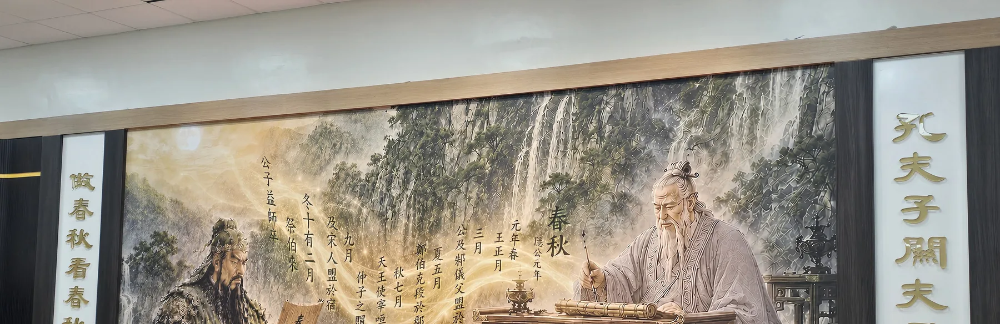

第一期
民國 113 年 6 月聖學推廣花藝
聘請外師與助教指導，首堂課教學方式生動活潑，學員學得不亦樂乎。
兩千多年前寫下的一段話。一句原文，配一句今天的講法。
原文出自《禮記》禮運篇
大道之行也，天下為公。選賢與能，講信修睦。
當道理真的走得通的時候，天下是大家的。有能力的人被選出來做事，人跟人之間講信用、處得來。
故人不獨親其親，不獨子其子。
那時候，你不會只疼自己的爸媽、只顧自己的小孩。
使老有所終，壯有所用，幼有所長，矜寡孤獨廢疾者皆有所養。
老人有地方終老，壯年人有事做，小孩有人帶大；沒伴侶的、沒家人的、身心有障礙的，都有人照顧。
男有分，女有歸。
男的有他的位置，女的有她的歸屬。
貨惡其棄於地也，不必藏於己；力惡其不出於身也，不必為己。
東西不要浪費，但不必都堆在自己家；力氣不要藏著，但不必都為自己用。
是故謀閉而不興，盜竊亂賊而不作，故外戶而不閉，是謂大同。
這樣一來，沒人需要算計誰，沒人偷沒人搶，出門不必鎖門。這就叫大同。
這不是烏托邦。
它是一份檢查表：你家、你的社區、你的公司，做到幾條？
儒家後來把孔子講過的道理整理成幾組詞。它們不是考試範圍，是三個看事情的角度。
孔子教學生六件事。那不是六門才藝課，是六種讓人變得完整的訓練。我們把六藝放回今天的生活裡：花藝、料理、書法、音樂。手上做的是花，練的是分寸；手上寫的是字，練的是靜。
第一期
民國 113 年 6 月聘請外師與助教指導，首堂課教學方式生動活潑，學員學得不亦樂乎。
第二期
民國 113 年 10 月（本期課後心得整理中）

孔子寫《春秋》，是在立標準。什麼是對的、什麼是錯的，他一筆一筆記下來。
一千兩百年後，關公在燈下讀《春秋》。他不是在讀故事，他是在守標準，把書上寫的，活成自己的樣子。
一個負責把道理說清楚，一個負責把道理做出來。少了任何一個，這件事都不成立。
我們接的，就是這條線。
關公讀《春秋》不是傳說。《三國志》〈關羽傳〉裴松之注引《江表傳》記載，關羽喜好《左氏春秋》，熟到能背誦。
大成殿是財團法人聖學文化教育基金會對外開放的主殿。想來看看、想問課程怎麼報名，寫信或打電話都可以。
孔子聖像兩側的對聯